Manual de Carino DICOM
Carino DICOM es una pasarela DICOM y un equipo de continuidad: recibe estudios, los enruta y los reenvía, los publica por Query/Retrieve y DICOMweb, y sostiene el servicio de imagen cuando el PACS o el RIS dejan de responder. Este manual cubre la puesta en marcha, el modelo de seguridad, cada servicio y sus límites reales.
Todas las capturas de este manual son de una instancia real de este software con estudios inventados para la foto. Aquí no aparece ningún paciente.
Contenido
1. Qué es y qué papel juega
Carino DICOM se instala entre los equipos que generan imágenes y los sistemas que las guardan o las leen. No pretende sustituir a tu archivo: pretende ser la pieza que los conecta y la que sigue en pie cuando alguna de las otras se cae.
Hace dos papeles, y conviene distinguirlos porque determinan qué servicios activas:
- Pasarela permanente. Recibe por C-STORE, archiva en disco por paciente/estudio/serie, reenvía a uno o varios destinos según reglas, anonimiza la copia que sale si lo pides, y publica lo que tiene por Query/Retrieve (para equipos antiguos) y por DICOMweb (para visores modernos).
- Red de seguridad. Si el PACS principal deja de responder, puede activar su propia Modality Worklist para que los técnicos sigan estudiando, retener lo que llega durante la caída y reenviarlo automáticamente cuando el principal vuelve. También recibe órdenes HL7 por MLLP —o las capturas a mano— cuando el RIS es el que está caído.
Todo se define en un único config.json y todo puede ejecutarse sin interfaz gráfica.
El panel web es cómodo, no obligatorio.
Puertos por defecto
| Servicio | Puerto | Protocolo |
|---|---|---|
| Receptor (Storage SCP) | 11112 | DICOM / DIMSE |
| Impresión virtual | 11113 | DICOM Print |
| Modality Worklist | 11114 | DICOM C-FIND |
| Query/Retrieve | 11115 | DICOM C-FIND/C-MOVE/C-GET |
| RIS de emergencia | 2575 | HL7 sobre MLLP |
| Panel web + DICOMweb | 8042 | HTTP |
Por qué 11112 y no 104. El puerto registrado de DICOM es el 104, que en
Linux y macOS es privilegiado y exige arrancar como root. El valor por defecto evita eso.
Configura tus equipos en consecuencia, o publica 104 hacia 11112 desde
el contenedor o el cortafuegos.
2. Primeros pasos
Elige la forma de ejecutarlo
| Forma | Para qué caso | Arranca sola tras un corte |
|---|---|---|
| App de escritorio (bandeja) | Un puesto con alguien sentado delante: una sala, un consultorio, una prueba. | Solo si activas «iniciar al abrir sesión» |
| Docker / Podman | Un servidor, o cualquier máquina donde quieras aislarlo y moverlo entero. | Sí (restart: unless-stopped) |
| Servicio systemd | La cajita permanente del servicio de imagen, sin nadie con sesión iniciada. | Sí |
App de escritorio
Descarga el paquete de tu sistema desde la página de releases y ábrelo. Se queda en la bandeja del sistema; al hacer clic se abre el panel. Como todavía no está firmado digitalmente, Windows y macOS avisan la primera vez: en la portada están los pasos exactos para abrirlo igualmente.
Docker
git clone https://github.com/MiguelCarino/Carino-PACS
cd Carino-PACS
mkdir -p data && sudo chown -R $(id -u):$(id -g) data
docker compose up -d
docker compose logs -f pacsEl primer arranque genera e imprime un token de acceso en el log. Abre
http://127.0.0.1:8042/ y pégalo cuando el panel lo pida. Todo —configuración,
estudios, logs, índice— vive en ./data, que es lo que tienes que respaldar.
El fallo más común del primer arranque es que ./data pertenezca a root:
el contenedor nunca corre como root y muere con EACCES. Si tu usuario no es el
1000, pon PACS_UID y PACS_GID en un fichero .env y
reconstruye. En hosts con SELinux (Fedora, RHEL, Rocky) el sufijo :z del volumen
no es decorativo: sin él el montaje es inescribible aunque los permisos parezcan correctos.
Servicio systemd (Linux)
git clone https://github.com/MiguelCarino/Carino-PACS.git
cd Carino-PACS
sudo packaging/systemd/install.shEl instalador crea el usuario de sistema carino-pacs, copia el código a
/opt/carino-pacs, prepara /var/lib/carino-pacs y deja la unidad
instalada… y no la arranca. No es un olvido: arrancar un PACS abre puertos que
aceptan datos de pacientes, y esa decisión se toma después de leer la configuración, no antes.
Edita /var/lib/carino-pacs/config.json y luego:
sudo systemctl enable --now carino-pacs
systemctl status carino-pacs
journalctl -u carino-pacs -fVolver a ejecutar el instalador actualiza el código sin tocar tu config.json.
Dónde viven los datos
| Forma | Directorio |
|---|---|
| Escritorio / CLI | ~/CarinoDICOM/ (las instalaciones existentes conservan ~/CarinoPACS) |
| Docker | /data dentro del contenedor → ./data en el host |
| systemd | /var/lib/carino-pacs/ (modo 0750) |
El config.json vive con los datos, no en /etc, porque las rutas
relativas del config ("./received", "./logs", "./index.db")
se resuelven contra el directorio del propio fichero de configuración. Un config en
/etc repartiría estudios de pacientes por /etc.
Primer arranque, en orden
- Elige los servicios. Todo viene apagado. El asistente del panel pregunta qué debe ejecutar esta máquina; enciende solo eso.
- Añade los destinos (nombre, host, puerto, AE title) en la pestaña Destinos de Configuración, que es la que abre por defecto.
- Comprueba la conectividad con C-ECHO antes de mover una sola imagen:
./run.sh echo --name "PACS del hospital". Si el C-ECHO no pasa, no es un problema de Carino: es red, cortafuegos o AE title. - Apunta un equipo hacia aquí con el AE title, la IP y el puerto del receptor, y envía un estudio de prueba.
- Mira el registro en la pestaña Registro de Actividad. Si algo falla, ahí aparece; este software prefiere gritar a fallar en silencio.
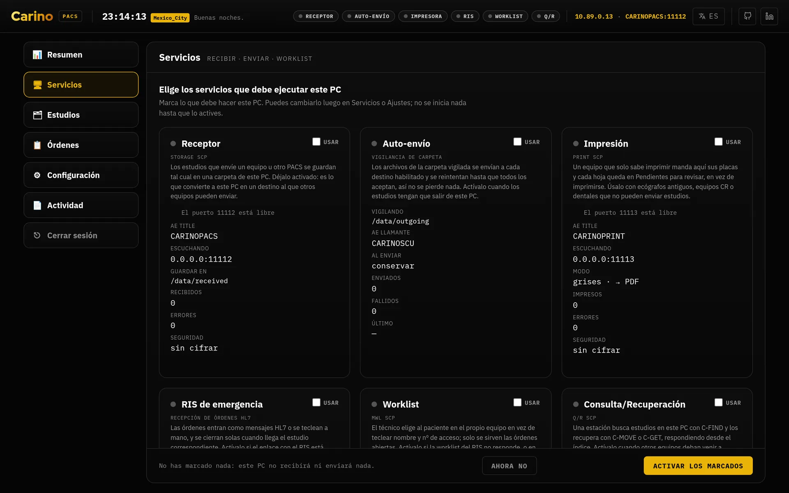
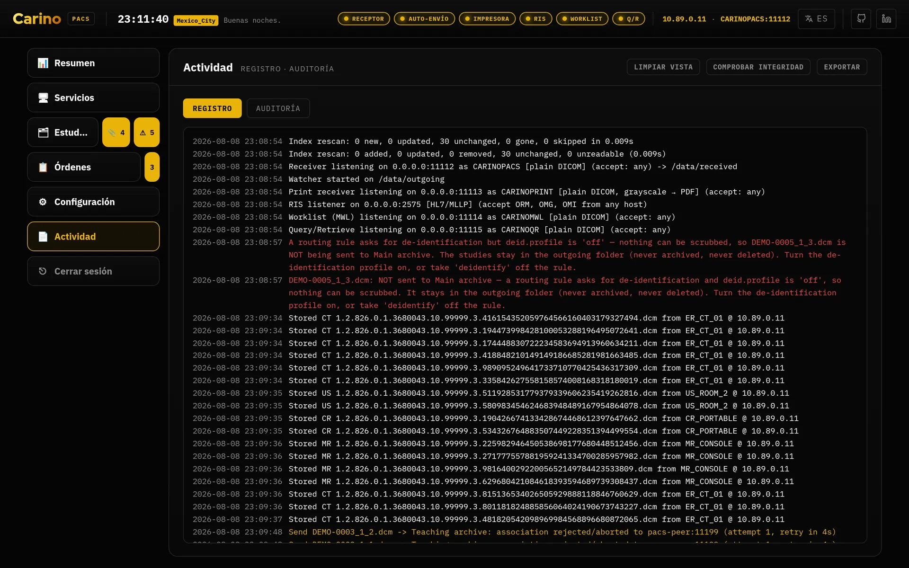
Sin interfaz gráfica
./run.sh init # crea config.json y sus carpetas
./run.sh init --token # además genera web.auth_token
./run.sh serve # panel en http://127.0.0.1:8042
./run.sh receive # solo el receptor
./run.sh send # solo el vigilante de carpeta / reenvío
./run.sh qr # solo Query/Retrieve
./run.sh mwl # solo la worklist
./run.sh ris # solo el receptor de órdenes HL7
./run.sh print # solo la impresora virtual
./run.sh echo --host 10.0.0.5 --port 104 --aet PACSREMOTOTodos los comandos aceptan -c / --config <ruta>. En Windows, run.ps1.
3. El modelo de seguridad y la regla del token
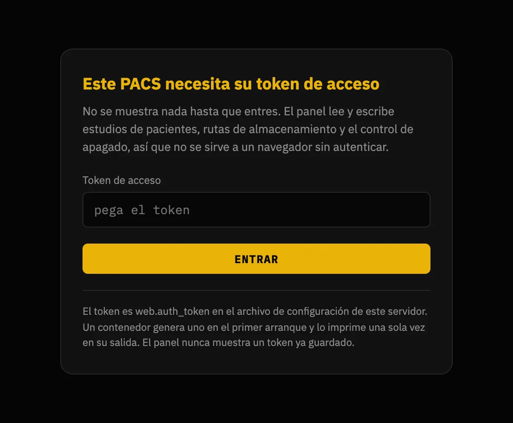
Empecemos por lo importante: el panel es la llave del archivo. Quien lo abre puede leer todos los estudios guardados, descargar los ficheros DICOM, cambiar cualquier ajuste, arrancar y parar servicios, borrar estudios y apagar el servidor. De fábrica hay un único secreto compartido y quien lo tiene lo puede todo: los perfiles son opcionales y están apagados hasta que usted los active. Al activarlos, cada persona entra como sí misma, con sus propios permisos, su propia vista de los identificadores del paciente y su propio nombre en la auditoría; el token compartido sigue funcionando como administrador, así que nada de lo que ya lo usa se rompe.
![La pestaña Personas de Configuración, con su tira de pestañas arriba y una línea que dice «4 perfiles»: Administrador, TI, Radiólogo y Recepción. La ficha del Administrador es corta, con la casilla «Administrador (todo, incluidos los permisos futuros)» marcada y por eso sin rejilla de permisos; debajo, la de TI muestra entera su rejilla «Puede hacer», con unas casillas marcadas y otras no, y la imagen se corta a la altura de su fila «Puede ver». Abajo a la derecha, fijado, el botón «Añadir a alguien».](../img/es/people.webp)
*** allí donde habría aparecido.El menú se dibuja según lo que cada perfil puede hacer. Una fila aparece si el perfil tiene
alguno de los permisos que necesitan sus pestañas, y después cada pestaña se comprueba por su
cuenta: el perfil Radiólogo, que tiene routing.read pero no
config.read, abre Configuración y ve Destinos y Rutas,
pero no Ajustes, que es donde están el token de la API y el apagado del servidor.
Recepción, que no tiene ninguno de los tres permisos, no ve la fila de
Configuración.
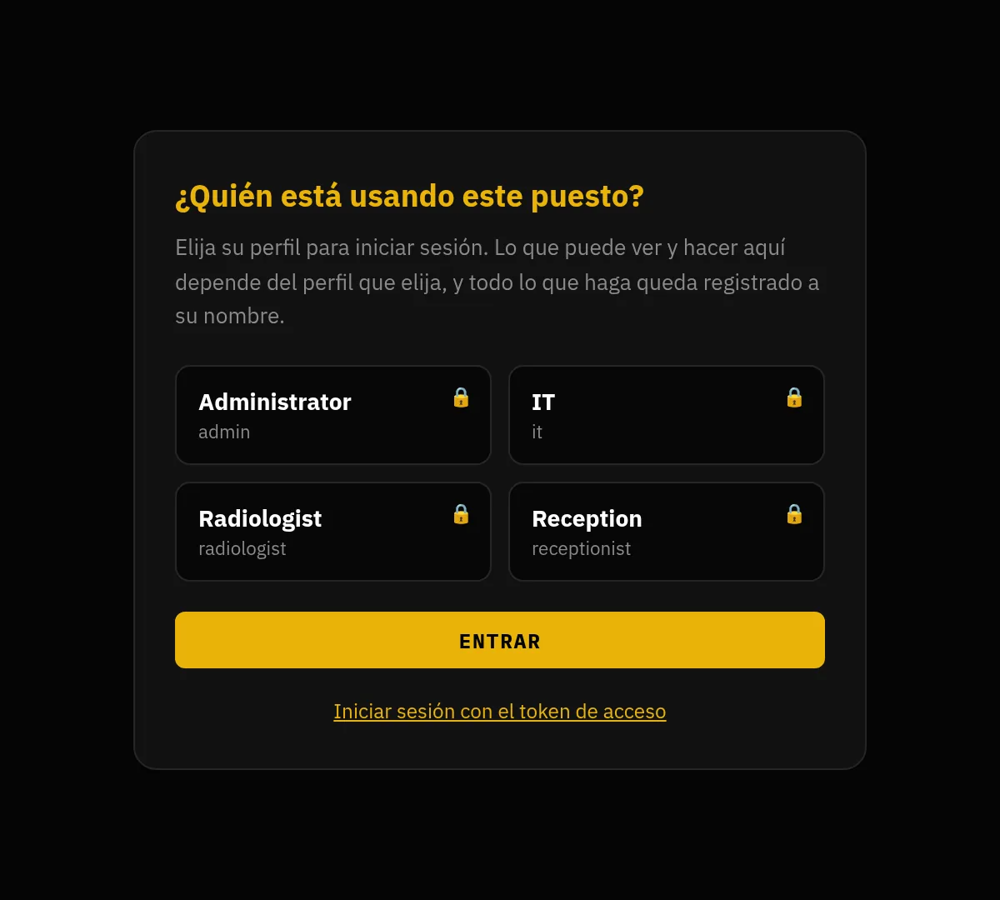
users.list_profiles está activo: publicar la lista del personal a quien pueda alcanzar el puerto es una divulgación real, y es decisión suya. El token sigue funcionando, plegado debajo, porque es la vuelta a casa cuando alguien se queda fuera.La regla
web.auth_token vacío solo se admite mientras web.host sea
loopback. Si web.host es cualquier otra cosa —0.0.0.0, una IP de la
red, un nombre— y el token está vacío, el servidor se niega a arrancar. Esa
negativa es una función del programa, no un error que haya que rodear.
La razón es concreta. Sin autenticación, en 127.0.0.1, el sistema operativo es el
control de acceso: solo un proceso de esa misma máquina puede hablar con la API. Es defendible.
Pero web.host lo configura el operador, y el día que alguien lo cambia a
0.0.0.0 para «poder entrar desde el otro PC» —con prisa, un martes, sin pensar en
seguridad— esa misma API le entrega a cualquier vecino de la red la lista de estudios, las rutas de
almacenamiento, los bytes DICOM y /api/shutdown. La regla existe porque ese cambio se
hace en diez segundos y sus consecuencias duran años.
Todo contenedor está siempre en ese caso: un contenedor publica en
0.0.0.0 por construcción. Por eso la imagen genera un token de 256 bits en el primer
arranque si no le das uno — y lo imprime. Lo que nunca hace es generarlo en silencio: un
secreto que nadie ve es un secreto que nadie rota.
Cómo generar y entregar el token
./run.sh init --token # lo escribe en config.json
python3 -c "import secrets; print(secrets.token_urlsafe(32))"
openssl rand -base64 32El servidor acepta la credencial de tres maneras:
Authorization: Bearer <token>X-Carino-Token: <token>- una cookie de sesión que emite
POST /api/login
La cookie existe para que el panel pida el token una vez en lugar de guardarlo en JavaScript, donde lo lee cualquier XSS y cualquier extensión del navegador. La cookie no lleva el token: lleva un HMAC calculado con un secreto generado al arrancar y guardado solo en memoria. Por eso un reinicio cierra todas las sesiones — es el precio correcto para un equipo de un solo operador: nada que robar en disco, y como mucho hay que volver a teclear el token una vez por turno.
El panel habla HTTP en claro. No trae TLS propio. Si lo publicas más allá de loopback, ponlo detrás de un proxy inverso que termine HTTPS. Un token enviado por HTTP sin cifrar en una red compartida es un token regalado.
El lado DICOM
allowed_aets— lista blanca de AE titles que pueden asociarse. Vacía significa «acepta a cualquiera». Es un filtro útil, no una autenticación: DICOM no autentica al llamante.- DICOM-TLS — disponible en ambos lados y de forma independiente, incluido TLS
mutuo con certificado de cliente. Usa el mismo puerto: un par en claro no puede hablar
con un receptor TLS, ni al revés. TLS cifra y autentica el transporte, no la
aplicación: combínalo con
allowed_aetso con certificados de cliente para tener control de acceso de verdad. - Cortafuegos — los listeners DICOM escuchan en
0.0.0.0por defecto (aunque todo listener está apagado hasta que lo enciendes). Eso es correcto para algo que las modalidades tienen que alcanzar, y significa que debes limitarlo por cortafuegos a la subred de las modalidades.
Lo que el modelo no protege
- Los perfiles están apagados hasta que usted los active. Hasta entonces hay un solo secreto compartido para todo el equipo, sin cuentas, sin roles y sin permisos. Ese sigue siendo el valor por defecto, porque activarlos en silencio durante una actualización rompería todos los clientes automáticos del sitio.
- No hay integración con su directorio. Las cuentas viven en el equipo. No hay LDAP, ni Active Directory, ni inicio de sesión único, ni forma de desactivar a alguien de forma centralizada cuando se va.
- La auditoría se puede truncar. Detecta un registro editado, uno eliminado del medio, registros reordenados y un fichero cortado a mitad de línea: cada caso rompe un resumen y Comprobar integridad dice en qué registro y por qué. No detecta que se borren los últimos registros, porque lo que queda es una cadena válida de verdad, ni impide que alguien con permiso de escritura sobre la carpeta la reescriba entera. Si necesita no repudio, copie la cabecera de la cadena a un sitio donde esta máquina no pueda escribir y compárela después.
- No hay cifrado en reposo. Los estudios son ficheros DICOM normales, el índice
sqlite guarda nombres e identificadores en claro, las órdenes son JSON y
config.jsoncontiene el token en texto plano. Cifra el volumen por debajo (LUKS, BitLocker, FileVault) y restringe los permisos del directorio de datos. - El listener HL7/MLLP no tiene ni TLS ni credenciales. Es un socket TCP con
trama MLLP. Su único control es
allowed_hosts, que comprueba la dirección del par y por tanto es suplantable. Quien pueda abrir una conexión a ese puerto puede inyectar órdenes que aparecerán en la worklist. Átalo a un segmento clínico de confianza y ponle cortafuegos. - La anonimización no toca los píxeles. Ver el servicio correspondiente más abajo: los datos quemados en la imagen sobreviven a todos los perfiles.
Copias de seguridad. El índice sqlite es una caché y se reconstruye solo; las imágenes no. Respalda los directorios de almacenamiento, y compruébalo restaurando alguna vez.
Sin telemetría. Carino DICOM no envía nada a ninguna parte: ni analítica, ni informes de errores, ni comprobación de actualizaciones, ni scripts de terceros cargados en tiempo de ejecución. Las únicas conexiones salientes son las asociaciones DICOM y los ACK HL7 que tú configuraste, hacia los pares que tú nombraste. Que dejara de ser así se trataría como una vulnerabilidad.
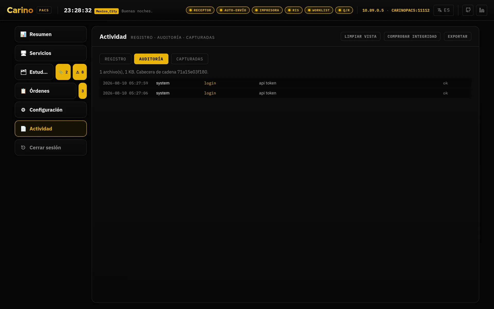
4. Los servicios, uno por uno
Todo lo que abre un puerto viene apagado. La pregunta correcta no es «¿qué puede hacer?», sino «¿qué necesita hacer esta máquina?». Cada servicio encendido es un puerto abierto más. El índice de abajo es la única excepción: arranca solo, porque es una caché sqlite local que no abre ningún puerto.
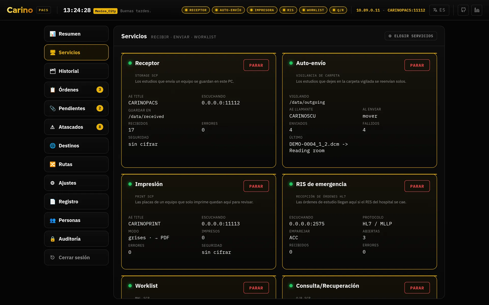
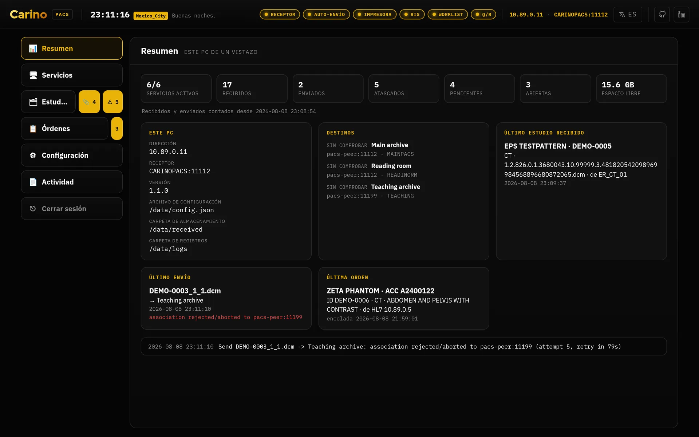
Receptor — Storage SCP
Puerto 11112 · C-STORE, C-ECHO
- Qué hace
- Acepta estudios enviados por las modalidades y los archiva en disco, opcionalmente organizados por Paciente / Estudio / Serie. Acepta todas las sintaxis de transferencia y guarda lo comprimido tal cual: no hay transcodificación, así que ningún dato se altera al entrar.
- Cuándo activarlo
- Siempre que algo tenga que enviarle imágenes: modalidades, otro PACS, una estación. Es el servicio central.
- Cuándo no
- Si esta máquina solo reenvía lo que otro deja en una carpeta.
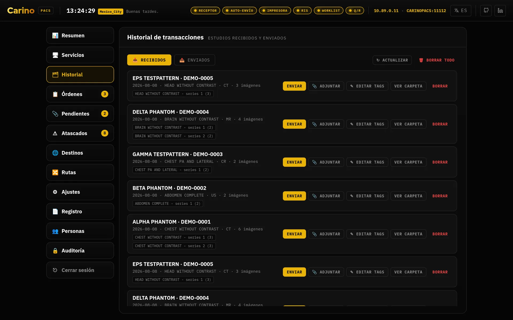
Auto-envío — Storage SCU y reglas de enrutamiento
Cliente saliente · C-STORE
- Qué hace
- Vigila una carpeta y reenvía cada fichero nuevo a los destinos que correspondan. Un fichero solo se envía cuando está estable (su tamaño no ha cambiado entre dos pasadas), así que nunca se reenvía un fichero a medio escribir. El progreso se lleva por destino: se da por terminado cuando todos los destinos habilitados lo han aceptado, y los que fallan se reintentan en la siguiente pasada. Al terminar puede conservar, mover o borrar el original.
- Reglas
- Con el enrutamiento activado, una regla decide destinos según modalidad, AE title de origen,
estación, ID de paciente o descripción del estudio (comodines
*y?, sin distinguir mayúsculas). Ejemplo: la TC procedente deER_*al archivo docente, anonimizada. - La garantía
- Un estudio nunca puede quedarse sin destino. Si el enrutamiento está apagado, si ninguna regla coincide, si la cabecera no se puede leer o si una regla nombra un destino que ya no existe, el fichero va a todos los destinos habilitados. Enviar de más molesta al operador; enviar de menos pierde una imagen.
- La única excepción
- Una regla que pide anonimizar para un destino, cuando la limpieza no se puede hacer de
verdad, deja ese destino retenido: no se le envía nada, en vez de enviarle
el estudio identificado. Hay dos cosas que impiden la limpieza —que el perfil esté en
off, o que el perfil esté activo pero no se pueda construir ningún anonimizador con los ajustes actuales— y se arreglan de forma distinta. En ambos casos no se pierde nada: ver Anonimización al reenviar más abajo. - Cuándo activarlo
- Cuando esta máquina tenga que entregar imágenes a otro sistema: reenviar al PACS central, alimentar una estación de lectura, sacar copias a un archivo docente.
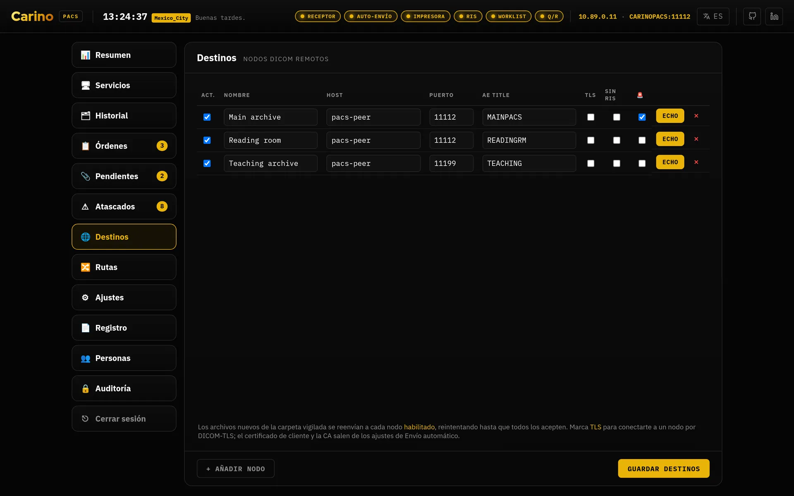
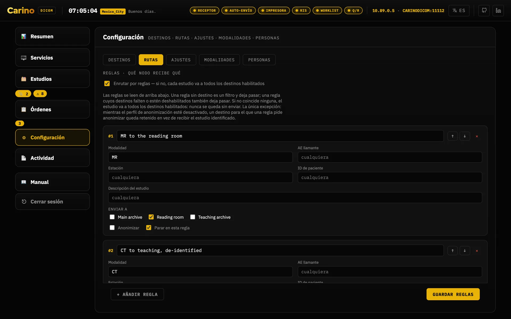
![La pestaña Atascados de Estudios, con un aviso arriba de que hay archivos que necesitan atención y dos secciones debajo. «Reintentando automáticamente»: una fila del destino Teaching archive, con las instancias que esperan, el número de intentos, una línea roja con el último error, un botón «Reintentar ahora» y la cuenta atrás del próximo intento. «Retenido: no se envía nada»: una fila del destino Main archive, etiquetada «perfil desactivado», con tres instancias en espera, los nombres de sus tres archivos .dcm, el párrafo que nombra la edición que las libera y dos botones, «Ajustes de anonimización» y «La regla que lo pide», que abren la pestaña de Ajustes y la de Rutas.](../img/es/stuck.webp)
La pestaña puede dibujar una tercera sección, Sin destino al que reintentar, que aquí no sale porque en esta máquina no hay ninguno: son archivos enviados a un nombre que ya no es un destino habilitado. No queda ningún nodo al que llamar, así que nada los reintenta y ninguna edición de anonimización los mueve; cada fila dice qué pasará con ellos. Se arregla en Destinos, volviendo a habilitar ese destino con el mismo nombre o corrigiendo el nombre en la regla que los mandó allí.
Anonimización al reenviar
Perfil PS3.15 Anexo E · se aplica solo a la copia que sale
- Qué hace
- Aplica el Basic Application Level Confidentiality Profile al objeto que se envía,
declarando en
(0012,0064)exactamente qué opciones de retención se usaron, para que quien lo reciba pueda comprobar qué se conservó. El original archivado no se reescribe jamás: esa asimetría es la idea entera. - Perfiles
basicconserva fechas (completas o desplazadas), características del paciente, identidad del equipo e institución.strictquita identidad de equipo e institución y elimina los atributos privados aunque pidas conservarlos.- Cuándo activarlo
- Cuando las imágenes salgan del entorno clínico: docencia, investigación, un proveedor, una segunda opinión externa.
- Al desactivarlo
- El perfil decide si se limpia algo; la casilla anonimizar de una regla decide qué
destinos reciben la copia limpia. Si pones el perfil en
offmientras una regla sigue pidiéndolo, Carino retiene ese destino en vez de mandarle una copia identificada a un nodo cuyo responsable cree que no recibe ninguna.
Retenido, no enviado; y es la respuesta cuando los estudios dejan de moverse. Un destino marcado como anonimizar por una regla no recibe nada siempre que la limpieza no se pueda hacer de verdad. Se aplaza la entrega, no se revela la identidad: un estudio que espera en disco se libera con una edición, mientras que un nombre que ya llegó a un nodo externo no se recupera con ninguna.
Hay dos motivos por los que la limpieza no se puede hacer, y no se arreglan igual. Cada retención guarda cuál de los dos es, y la pestaña Atascados imprime el remedio del motivo que quedó registrado en vez de adivinarlo:
- El perfil está en
offmientras una regla sigue pidiendo la limpieza. Pon el perfil enbasicostricty la siguiente pasada de auto-envío los libera. - El perfil está activo, pero no se pudo construir ningún anonimizador con los ajustes actuales, así que sigue sin haber con qué limpiar. El fallo que lo impidió está en la pestaña Registro de Actividad, en el canal de envío: arréglalo ahí. Apagar el perfil no libera esta retención: no libera nada, solo cambia cuál de las dos mitades está impidiendo la limpieza.
Las dos ediciones viven en Configuración, una en Ajustes y otra en Rutas, y cada fila retenida lleva un botón hacia cada una: Ajustes de anonimización abre la pestaña Ajustes y La regla que lo pide abre la pestaña Rutas. Los dos abren la pestaña y nada más: ninguno baja hasta la regla concreta ni la señala. Aun así la reparación es más corta que antes: se lee el motivo en la fila y se pulsa el botón, sin ir a buscar la pantalla a mano.
Quitar la marca anonimizar de la regla libera cualquiera de las dos retenciones, y las libera identificadas, que es justo lo que la retención existe para evitar. Haz esa edición solo si de verdad ese destino ya no debe recibir datos anonimizados.
No se pierde nada y nada de esto es silencioso. Los estudios se quedan en la carpeta de salida —nunca se archivan ni se borran—, el resto de destinos del mismo estudio lo siguen recibiendo, la pestaña Registro lo saca como error nombrando el estudio, el destino retenido y el motivo, el bloque de anonimización de Ajustes también lo nombra, y el contador ⚠ de la fila Estudios cuenta esos ficheros y abre Atascados al pulsarlo. Nada libera una retención por sí solo: ningún temporizador la agota y nada la reintenta.
No limpia los píxeles. Los datos del paciente quemados en la imagen —la cabecera que imprime un ecógrafo o una captura secundaria— sobreviven a todos los perfiles, y son la forma más común de que datos «anonimizados» salgan del hospital con nombre y apellidos. La opción Clean Pixel Data (113101) no se declara a propósito, porque no se hace. Nada dentro del programa puede detectar esa fuga por ti: alguien tiene que mirar las imágenes. El texto libre dentro de informes estructurados tampoco se analiza.
Índice
sqlite · index.db
- Qué hace
- Mantiene una fila por fichero almacenado y deriva de ahí las respuestas de paciente, estudio y serie, para que un resumen de estudio nunca pueda desfasarse de las instancias que resume. Es la capa de consulta que hay debajo de Query/Retrieve y de DICOMweb.
- Cuándo activarlo
- Siempre que uses Query/Retrieve o DICOMweb. Es la única dependencia de ambos.
- Qué garantiza
- El índice es una caché, nunca la fuente de verdad. Perderlo cuesta un reescaneo, nunca una imagen.
Query/Retrieve — C-FIND, C-MOVE, C-GET
Puerto 11115 · Patient Root y Study Root
- Qué hace
- Permite que otro sistema pregunte «¿qué estudios tienes de este paciente?» y luego «mándamelos a mí / a esa estación». Es la mitad del PACS con la que puede hablar el equipamiento antiguo: un ecógrafo de 2009 o un digitalizador de CR nunca hablarán DICOMweb, pero sí DIMSE.
- Cuándo activarlo
- Cuando estaciones de trabajo o modalidades tengan que traerse estudios de aquí, o cuando hagas de archivo temporal durante una caída del PACS principal.
- Qué garantiza
- Un C-MOVE nunca inventa la lista de instancias: la resuelve por el índice. Lo que el índice conoce pero no se puede leer del disco se cuenta como sub-operación fallida y se nombra en la lista de UIDs fallidos. Nunca se descuenta en silencio: un C-MOVE que informa de éxito enviando menos imágenes de las que encontró es el peor fallo posible de este software.
DICOMweb — QIDO-RS, WADO-RS, STOW-RS
HTTP, bajo /dicom-web en el puerto del panel
- Qué hace
- Deja que visores modernos (OHIF, Weasis y compañía) consulten, descarguen y suban estudios por HTTP sin negociar una asociación DICOM. Lo que se sube por STOW-RS pasa por el mismo archivado que un C-STORE, así que un estudio enviado desde un visor es indistinguible de uno enviado por una modalidad.
- Cuándo activarlo
- Cuando quieras enchufar un visor web al archivo. Recuerda que el token protege también estas rutas.
- CORS
cors_originsse compara de forma exacta (esquema + host + puerto) y viene vacía, así que no se devuelve nada a un origen que no esté en la lista. No hay sintaxis de patrones, pero un*literal sí se respeta, y solo porque lo escribiste tú: a partir de ahí se refleja cualquier origen y cualquier página que visite el operador podría leer el archivo desde esta máquina. Mejor nombra el visor.- Qué no hace
/rendered,/thumbnail, URIs de bulkdata y la conversión entre sintaxis de transferencia no están implementados y responden406. Un visor a medias es peor que una función ausente: lo que no se puede producir no se finge.
Modality Worklist (MWL)
Puerto 11114 · C-FIND de worklist
- Qué hace
- Sirve órdenes a las modalidades para que el técnico no teclee los datos del paciente a mano. Cada orden lleva un Study Instance UID pregenerado que se graba en el estudio, de modo que lo que la modalidad devuelve concilia exactamente con su orden. El campo AE de destino dirige una orden a una estación concreta; en blanco, la ven todas.
- Cuándo activarlo
- Cuando el RIS no llega hasta las modalidades: porque está caído, porque el destino sencillamente no tiene RIS, o para probar un flujo RIS→PACS sin un RIS real.
RIS de emergencia — órdenes HL7
Puerto 2575 · HL7 ORM^O01 sobre MLLP
- Qué hace
- Recibe órdenes HL7 por MLLP y también permite teclearlas a mano en el panel cuando no queda nada vivo aguas arriba. Cuando el estudio vuelve por C-STORE, se concilia con su orden por número de accession (con el ID de paciente como reserva) y la orden se cierra y se archiva para la traza — nunca se borra.
- Cuándo activarlo
- Durante una caída del RIS, o en pruebas de integración.
- Qué garantiza
- La entrega de imágenes nunca depende de que exista una orden. Un estudio sin orden que le corresponda se guarda y se reenvía igual; la orden simplemente queda abierta para conciliarla a mano.
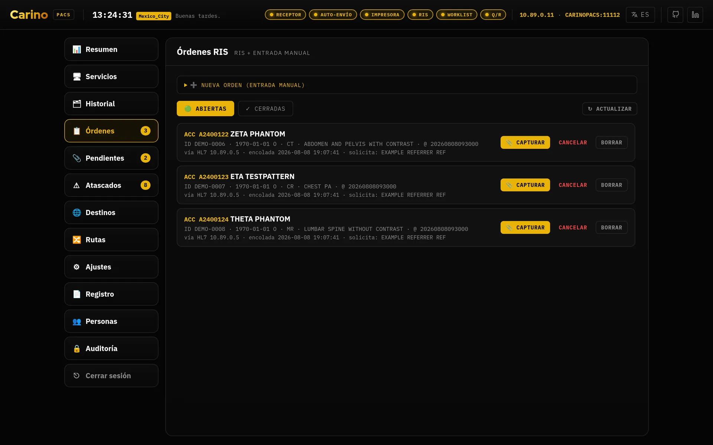
Sin TLS y sin credenciales. Ver el apartado de seguridad: quien pueda abrir un socket a ese puerto puede inyectar órdenes. Solo en red clínica de confianza y con cortafuegos.
Failover de emergencia
Vigilancia por C-ECHO del PACS marcado como principal
- Qué hace
- Marca un destino como principal y arma el monitor: Carino le hace C-ECHO periódicamente y observa los fallos de reenvío. Si sigue inalcanzable pasado el umbral, avisa y ofrece activar el RIS de emergencia. Al activarlo arranca la worklist local para que los técnicos sigan estudiando, retiene lo que llega durante la caída y lo reenvía automáticamente cuando el principal vuelve. Vuelves a la normalidad cuando tú lo decides.
- Cuándo activarlo
- En la máquina que hace de pasarela hacia un PACS del que dependes. Es la razón por la que existe la palabra «continuidad» en la primera línea de este manual.
Impresión virtual
Puerto 11113 · DICOM Print, salida PDF
- Qué hace
- Se presenta como una impresora DICOM y captura como PDF lo que le manden. Para equipos cuya única salida es la placa, es la forma de conservar algo archivable.
- Cuándo activarlo
- Cuando tengas una modalidad que solo sabe imprimir y quieras rescatar su resultado.
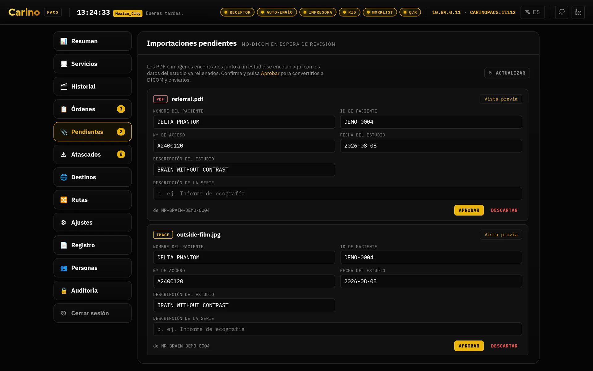
Panel web
Puerto 8042 · HTTP, 127.0.0.1 por defecto
- Qué hace
- Estado de cada servicio, estudios, órdenes, destinos y reglas, registro de actividad en vivo, ajustes y un editor DICOM incluido. Todo lo que hace el panel existe también en la CLI.
- Cómo se navega
- El menú de la izquierda tiene seis filas: Resumen, Servicios,
Estudios, Órdenes, Configuración y Actividad. Las tres
preguntas que se hacen sobre el mismo montón de ficheros son las pestañas de
Estudios —Historial, Pendientes y Atascados—; lo que se
ajusta al poner el equipo en marcha son las pestañas de Configuración
—Destinos, Rutas, Ajustes y Personas—, y esa pantalla
abre por Destinos, no por Ajustes; y los dos registros son las pestañas
de Actividad —Registro y Auditoría—. Órdenes mantiene
su propia tira de abiertas y cerradas. La fila de Estudios lleva dos contadores
que son botones, 📎 lo que espera aprobación y ⚠ lo que está atascado, y cada uno abre su
pestaña directamente; Órdenes lleva el suyo. Un contador se oculta cuando vale
cero, porque un número que dice 0 es una alarma encendida siempre, y una alarma que nunca
se apaga deja de leerse: por eso llegar a Atascados es un solo clic mientras haya
algo atascado, y dos cuando no lo hay —la fila y luego la pestaña—. Cada pantalla y cada
pestaña tienen además su dirección —
#studies/stuck,#configuration/routing,#activity/logs—, así que se pueden guardar en marcadores o dictar por teléfono, y el botón de atrás del navegador funciona. Los enlaces antiguos del estilo#dlgStucksiguen llevando donde llevaban. Resumen es la única excepción: responde a#overviewsi usted lo escribe, pero nunca se escribe solo en la barra de direcciones ni deja entrada en el historial. Imprime el nombre de un paciente, y una pantalla desatendida no debe volver ahí al recargarse. - Los chips de la cabecera
- Los chips de servicio de arriba no cambian para quien puede arrancar y parar servicios. Para un perfil que no puede, siguen visibles como indicadores pero desactivados: que el receptor esté caído no es información reservada y quien está en el mostrador necesita verlo, pero no tiene sentido ofrecerle un interruptor que el servidor va a rechazar.
- Cuándo moverlo de loopback
- Solo con un motivo concreto — y entonces con token obligatorio y HTTPS delante. Ver la regla del token.
![La pestaña Ajustes de Configuración, con sus doce bloques en tres columnas en una pantalla ancha: el AE title del receptor, su dirección de escucha, puerto, carpeta de almacenamiento, mínimo de espacio libre, lista de AE permitidos y campos TLS; el AE llamante del auto-envío, la carpeta vigilada, el intervalo de sondeo, qué hacer tras enviar un fichero y sus ajustes de confianza TLS; y al lado los bloques de impresión, conmutación de emergencia, Modality Worklist, RIS de emergencia, Consulta/Recuperación, DICOMweb, índice de instancias, anonimización, acceso a la API e integraciones.](../img/es/settings.webp)
config.json, en un formulario. El fichero sigue siendo la fuente de verdad: editar aquí lo escribe, y una configuración que el panel se negaría a guardar se rechaza diciendo por qué, no se reescribe en silencio.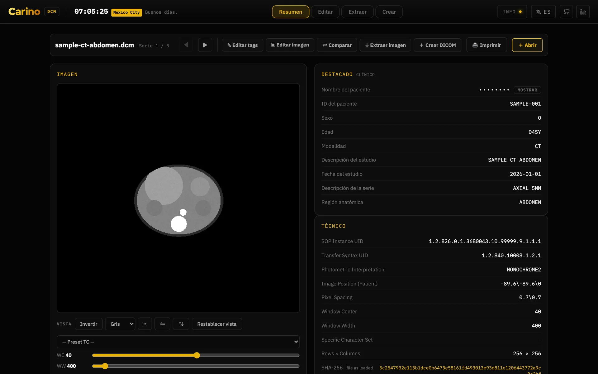
![La pestaña de edición del editor: una barra con anonimizar todo, aleatorizar todo, añadir etiqueta, JSON, CSV, imprimir y descargar todo; una tira con las cinco series cargadas; filtros por paciente, estudio, serie, imagen, equipo, UIDs y etiquetas privadas; la tabla de etiquetas, una fila por atributo con su grupo y elemento, descripción, VR y un valor editable; y en el tercio derecho un panel de ediciones de imagen —girar, voltear, invertir y censurar el texto grabado, escrito en los píxeles guardados— sobre la vista previa, una lectura de ventana/nivel plegada y la zona para soltar archivos.](../img/es/editor-tags.webp)
5. Esto no es un producto sanitario
Carino DICOM no es un producto sanitario. No está certificado, ni autorizado, ni registrado ante ninguna autoridad reguladora, en ningún país. No lleva marcado CE como producto sanitario, no tiene autorización de la FDA, ni registro de COFEPRIS, ANMAT, INVIMA, ISP ni de ningún organismo equivalente. Nadie ha ejecutado sobre él una validación para uso clínico.
No sirve para diagnóstico primario. Aquí no hay visor diagnóstico: no hay ventaneo, ni mediciones, ni cadena de renderizado calibrada, ni control de la pantalla en la que se muestra. Interpreta los estudios en la estación de trabajo validada que ya tienes.
Dicho sin rodeos, porque es más útil que una nota al pie:
- Si lo despliegas, la validación es tuya. El cumplimiento normativo, la evaluación de riesgos, la protección de datos y la responsabilidad clínica recaen sobre la organización que lo pone en producción, no sobre el proyecto.
- Se distribuye sin garantía de ningún tipo, como dice su licencia AGPL-3.0.
- No sustituye a tu PACS ni a tu RIS. Es la pasarela entre ellos y lo que mantiene el servicio en marcha durante una caída, hasta que vuelvan.
- Trátalo como infraestructura clínica de todos modos. Que no sea un producto sanitario no lo hace inocuo: mueve datos de pacientes. Cifrado del volumen, cortafuegos, TLS, token y copias de seguridad no son opcionales.
- Si la atención de un paciente depende de esto, la responsabilidad es tuya, no del software.
Nada de esto es pesimismo: el proyecto se toma en serio que una imagen que nunca llega en silencio es peor que un fallo ruidoso, y por eso prefiere negarse a arrancar, contar explícitamente las sub-operaciones fallidas y reenviar de más antes que de menos. Solo retiene una entrega en un caso, de forma ruidosa y reversible: un destino para el que una regla pide anonimizar cuando la limpieza prometida no se puede hacer, sea porque el perfil está apagado o porque el perfil está activo y no se pudo construir ningún anonimizador. Dice cuál de los dos es, porque los dos se arreglan de forma distinta. Pero el software solo puede responder de lo que hace él; del resto respondes tú.
6. Licencia y dónde pedir ayuda
Carino DICOM se publica bajo AGPL-3.0-or-later. Como es un servidor de red, se
aplica el §13: si ejecutas una versión modificada como servicio, debes ofrecer su código a quienes
la usen. Conserva el fichero LICENSE y un enlace al código con cualquier despliegue
modificado.
- Código y seguimiento de incidencias en GitHub
- Política de seguridad — qué está protegido, qué no, y cómo reportar una vulnerabilidad
- Cómo contribuir
Si encuentras un error en este manual —o una traducción que un radiólogo no diría nunca— abre una incidencia. La documentación en español y portugués es parte del proyecto, no un extra.
Carino DICOM · portada · parte del taller carino.systems · AGPL-3.0-or-later.